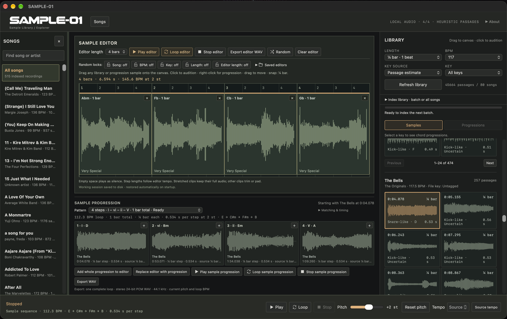

Explore a collection
Index your locally stored recordings and browse the library without repeatedly loading whole tracks into your DAW.

Built for large sample collections, SAMPLE-01 saves you the time of loading individual tracks into your DAW to find the parts worth keeping. Browse and audition passages in one place, then export your selections. The same workflow works for smaller collections, too.
Your recordings, discovered passages and sample editor in one workspace. Stay close to the source as you shape your next idea.

Actual app screenshot. Controls and layout may change before release.
A focused path from a library of complete recordings to the moment you want to use.
Index your locally stored recordings and browse the library without repeatedly loading whole tracks into your DAW.
Filter candidate passages by duration, tempo and musical key. Click through possibilities quickly.
Arrange selected passages, loop your sequence and experiment with pitch, timing and progressions.
Export a WAV from your working sequence to continue production wherever you prefer.
SAMPLE-01 is under active development for macOS. A purchase link will appear when the app is ready to release.